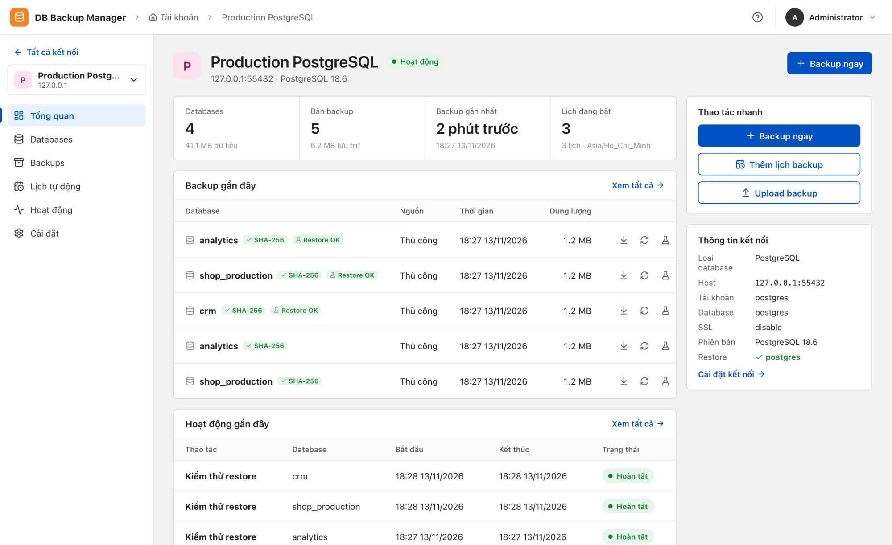
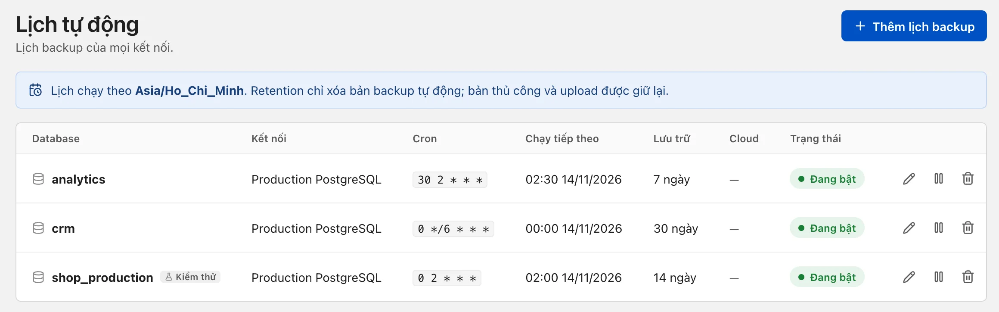
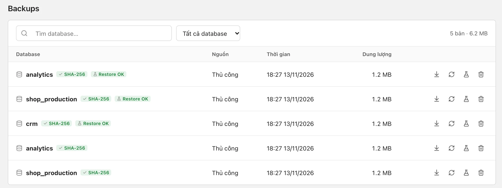
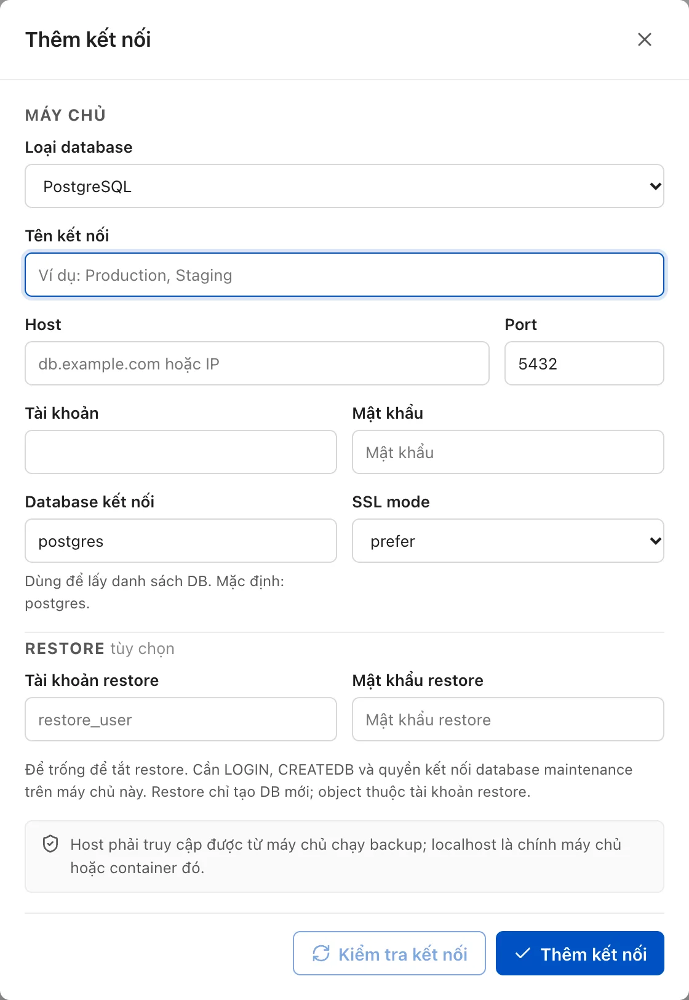

Open source · Self-hosted · MIT
Back up your databases, and know they restore.
A lightweight web app to schedule backups, store encrypted copies in the cloud and test restores for PostgreSQL, MySQL, MongoDB, SQL Server and file directories.

Scheduling
Schedule once, track every run.
Cron schedules with their own timezone, retention in days, automatic retries on failure and catch-up when the app restarts. Optionally test a restore right after every scheduled backup.

Verification
Every backup has a checksum and a restore result.
Backups are checked for SHA-256 and format as soon as they are created. A test restore into a temporary database proves the data is usable, with the result shown right next to each copy.

Connections
Add a server, test the connection, save.
Passwords are encrypted at rest and never appear on the command line. Restores use a separate account and always create a new database or directory instead of overwriting.

Everything else you need in production
- Offsite storage
- Upload via rclone to S3, R2, MinIO, B2, Google Drive, OneDrive, Dropbox, SFTP, WebDAV. Encrypted with age before leaving the server.
- Notifications
- Telegram, Slack, Discord, SMTP email or webhook when jobs fail or succeed.
- Monitoring
- A
/metricsendpoint for Prometheus, plus alerts for low disk space and stale backups. - Access control
- Multiple users, scoped by connection and database, with a full activity log.
- Secure by default
- HTTPS with an auto-generated certificate, non-root, read-only root filesystem, no Docker socket needed.
- Multilingual
- UI in English, Vietnamese and Japanese; customizable name, logo and timezone.
Supported databases
| Type | Backup via | File |
|---|---|---|
| PostgreSQL | pg_dump --format=custom |
.dump |
| MySQL / MariaDB | mariadb-dump --single-transaction |
.sql.gz |
| MongoDB | mongodump --archive --gzip |
.archive.gz |
| SQL Server | BACKUP DATABASE … COPY_ONLY, CHECKSUM |
.bak |
| File directory | tar + gzip, fully read back to verify | .tar.gz |
Up and running in minutes
Clone the repository, set ADMIN_USER,
ADMIN_PASSWORD and POSTGRES_NETWORK in
.env, prepare permissions for data/ and
backups/, then start it. The app opens at
https://localhost:8088.
git clone https://github.com/vinhnotes/db-backup-manager.git
cd db-backup-manager
cp .env.example .env && chmod 600 .env
# edit .env, then:
sudo install -d -o 999 -g 999 -m 700 ./data ./backups
docker compose up -d --build